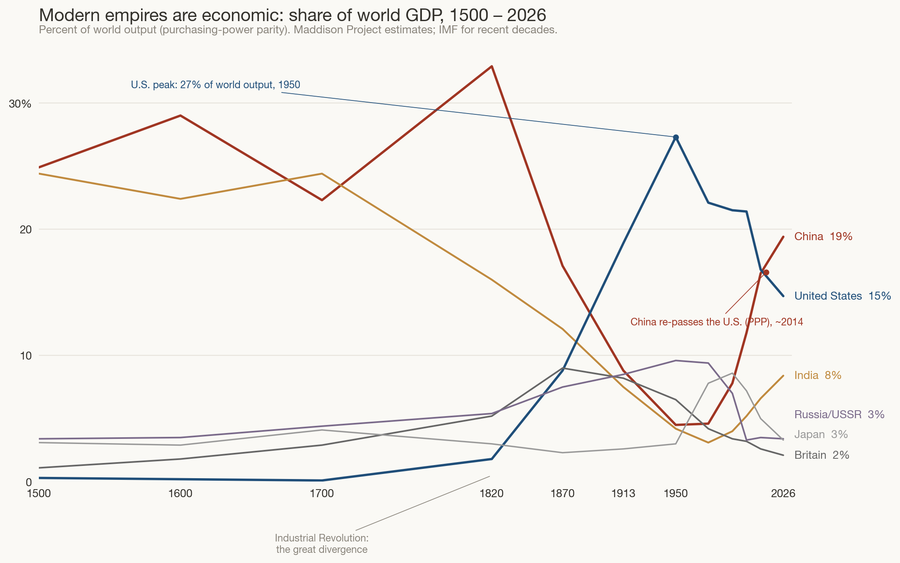
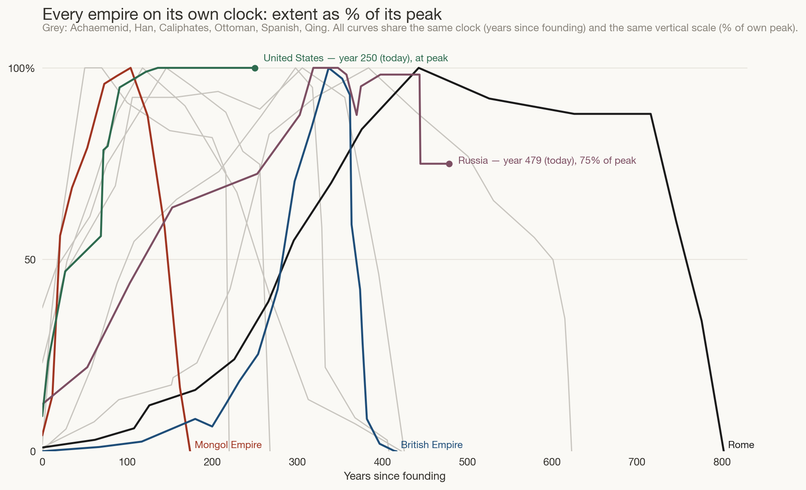

Twenty-five centuries of rise and fall, in three pictures.
Build: ~21 minutes wall-clock, in one session (11 June 2026) · tokens (estimated): ≈2M in (the large majority cached context re-reads; includes rendering and visually inspecting every chart iteration) / ≈35k out (code, page, narrative) · model: Claude Fable 5. Figures are estimates from the session log, not billing telemetry. Equations and the verbatim prompt box were added in a follow-up session (12 June 2026).
“Power” has no gauge. So this page uses two honest, imperfect proxies and never mixes them: for most of history, land ruled (million km², after Rein Taagepera’s classic surveys); for the modern era, share of world output (Maddison Project / IMF, at purchasing-power parity). Every chart keeps one shared scale, so a tall curve is genuinely bigger than a short one — no panel is stretched to flatter its subject.
Twenty-nine polities — empires, and the modern states that continue them — ordered top-to-bottom by the date they began to rise. Time runs left to right; the height of each curve is the land it ruled, on one common scale. Reading down any vertical line shows you everything that was rising, peaking, or dying at the same moment. One caution on the y-axis: a row’s vertical position carries no quantity — the offsets only keep empires apart. Height above each row’s thin baseline is the measure, calibrated by the key at the lower left.
To be precise about what is plotted — because this figure involves no model, only bookkeeping — the curve drawn for the i-th row is
where is the empire’s territorial extent and is a constant shelf that spaces row i above its neighbours — pure separation, carrying no quantity. The extent itself is a straight-line interpolation between dated atlas estimates :
No smoothing, no fitting, no inferred values: between waypoints the chart admits it is guessing linearly, and the waypoints themselves are Taagepera’s estimates. The same drives the hover tooltips below.
Hover a curve to isolate one empire · move along the timeline to see who shared the world in any year
Three things jump out. First, scale escalates: antiquity’s superpowers — Persia, Rome, Han China — ruled about 5–6 million km²; the Arab caliphates doubled that; the Mongols doubled it again; Britain peaked at 35.5, seven Romes. Each jump rode a technology of control: cavalry and roads, then the horse-relay steppe, then the ocean-going ship and the telegraph. Second, empires are never alone — Rome shared its whole life with Han China and Parthia/Persia; the parallel rise of the gunpowder empires (Ottoman, Mughal, Russian, Spanish) after 1500 is almost simultaneous — and the Inca built the Americas’ largest empire in the very decades Spain’s caravels set out to end it. Third, civilisations pulse: the brick-red curve dies and returns four times — Han, Tang, Ming, Qing — and is back on the map today as the PRC, alongside republican India; Persia’s green line resurfaces twice (Sasanian, Safavid); and the Islamic world fields a nearly unbroken relay from 632 to 1922 — Caliphates, then Fatimids and Seljuks, then Delhi, the Timurids, and finally the Ottomans and Mughals side by side. China is not one empire; it is a rhythm — and it is not the only one.
After 1945 almost nobody’s power grows by annexing land — the American “empire” holds 9.8 million km² and has barely moved in a century, which is why its curve in Figure 1 is a flat green shelf. Modern dominance is economic, so the modern chart must change its unit: percent of everything the world produces.
Note the deliberate discontinuity: Figure 1 measures land and only land, on one scale, for everyone — apples to apples within the figure. This figure abandons that unit entirely rather than blend two incommensurable ones. What it plots is a share,
where is economy e’s gross product at purchasing-power parity. The values are Maddison Project reconstructions (IMF for recent decades) joined by straight lines between benchmark years — again data plotted directly, with no model in between. Because it is a share, the curves answer “compared to what?” by construction: everything sums across the whole world to 100.

This chart quietly reframes the present. For eighteen of the last twenty centuries, China and India together were roughly half the world economy; the European and American centuries are the anomaly, opened by the Industrial Revolution around 1820. On this metric the United States is not young and ascending — it peaked in 1950, when a war-wrecked world made it half of all industrial output, and has glided down to ~15% as Asia rebuilt. China’s curve is best read not as a rise but as a reversion to its millennial mean.
To compare the shapes of imperial lives — your “parallelness” question — strip away both calendars and sizes: start every empire at year zero and scale each to its own peak. This is the only figure that transforms the data, and the whole transformation is two rescalings of Figure 1’s :
where is each empire’s founding year. Time becomes age, size becomes percent of own peak — so every curve starts at the origin and touches 100 exactly once, and only the shapes remain.

There is no single life-cycle, but there are families. Explosive–brief: the Mongols hit full size in a single lifetime and were gone within two centuries. Slow–long: Rome took four centuries to peak and three more to die; the Ottomans stretched the same arc over six. And the falls are getting faster: Rome’s decline took ~300 years, Spain’s ~80, Britain went from its largest extent (1920) to dissolution in about 40 — one human adulthood. The two dots mark the present: Russia at year 479, still holding 75% of its 1895 peak — old, shrunken, but the largest country on earth; the United States at year 250, never having contracted at all on this measure.
The charts above are data (approximate, but sourced). What follows is interpretation.
Territorial extents are approximations after Rein Taagepera’s surveys (“Size and Duration of Empires,” 1978–1997), interpolated between dated estimates; values are uncertain by ±20% and worse for ancient states. GDP shares are Maddison Project reconstructions (heroic for 1500–1820) spliced with IMF PPP data. “One empire” is itself a judgment call — Rome/Byzantium and Tsarist Russia/USSR/Russia are each shown as continuities, China as four separate dynasties; reasonable people draw these lines differently. Bronze-Age empires (Egypt’s New Kingdom, Akkad, the Hittites) are left of the chart’s edge on purpose: including them would stretch the axis by another millennium for polities under ~1.5 million km²; Neo-Assyria, which bridges to Persia, marks the deep end instead. In the Americas the Inca appear; the Aztec confederation (~0.2 million km²) is too small to register at this scale, and vast modern federations (Brazil, Canada, Australia) are single states, not empires. Land and GDP both understate nomadic, naval, and network power. Treat every curve as a sketch of magnitude and timing, not a measurement.
Charts generated by make_empire_plots.py;
static versions: Fig 1 ·
Fig 2 · Fig 3
(each also as *_dark.png).
{kind=link}
{kind=link}
{kind=link}